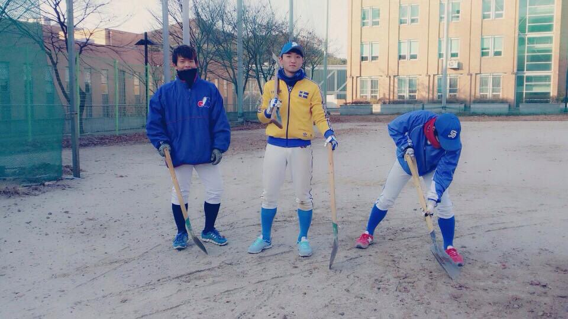
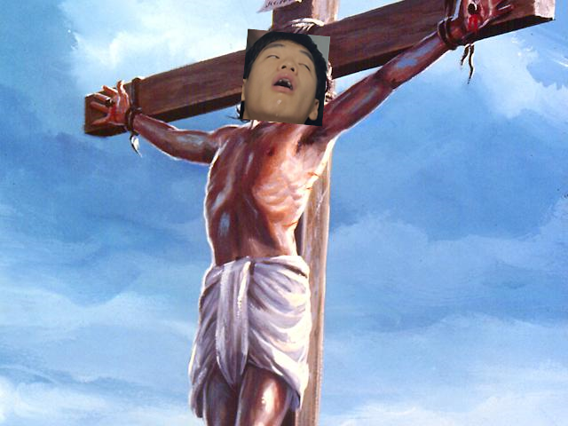
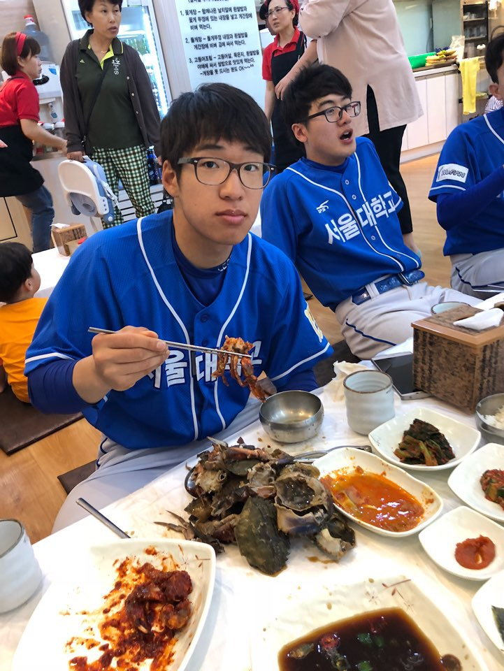

 
Kyoung Oh started his baseball career at Playboys, a baseball club in SNU.
Although there are many other club, he chosse Playboys. Why?
There were so many legendary things that I couldn't all things because I have no space.
Just remember this. He was the best hitter (4th, cleanup) at SNU in his last season.
One of the game, he had a chance to score. Before that game, he made many hits so it was his peak season.
But coach ordered him to make a bunt. All team member was supprised and embarassed.
They expected him to make a hit. But Kyoung Oh nodded his head camly. Everybody shut their mouse,
and he made perpect bunt. He sacrificed himself for team. Since that, he became a symbor of SNU.
He like "간장게장"
